Flight Planning
Center for Geospatial Analytics at North Carolina State University
Objectives
- Describe the four phases of flight planning, from project definition to flight control
- Apply safety procedures and preflight checklists required under Part 107
- Plan ground control point placement and relate GCP accuracy to ground sampling distance
- Set the flight parameters that shape a mapping mission: altitude, overlap, pattern, speed, and lighting
- Choose a flight planning platform for a given aircraft and project
Where this lecture sits
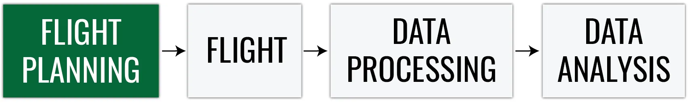
Four questions to keep asking: What is the aim of the project? What resolution does it need? What do the regulations allow? What will the weather do?
Four phases of flight planning
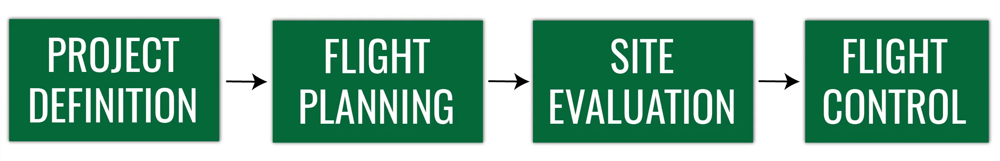
Project definition
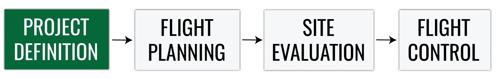
| Decision | Driven by |
|---|---|
| Spatial scale: resolution and extent | Project aim, UAS and sensor capabilities, terrain constraints |
| UAS and sensor | Required resolution, area size, budget |
| Cost, labor, and time | Area, number of flights, field crew, processing |
| Terrain information | Existing DEMs, imagery, and local knowledge of the site |
Project definition
Legal constraints
- Airspace class and any authorization needed (Topic 1)
- Landowner permission for takeoff, landing, and access
- Local restrictions on the site
Coordinate system
- Chosen by the desired coordinate system of the final products
- Consistent with the coordinate system of the GCP survey
- Record the horizontal and vertical datum
Decide the coordinate system before the survey: a GCP file without its coordinate system is a list of numbers, not coordinates
Flight planning
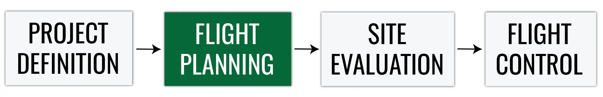
- Mission area assessment
- Planning geometric parameters: altitude, overlap, pattern, and camera angle
- Choosing a flight planning and flight logging platform
- Preliminary weather assessment: climate, season, forecasts
- Creating the flight plan in the chosen software
Placing ground control points
- A minimum of 5 GCPs is recommended; 5 to 10 are usually enough, even for large projects
- Use more GCPs when the topography is complex
- Distribute them evenly across the area
- Do not place GCPs exactly at the edges of the area

Surveying the GCPs
Before measuring the GCP coordinates, define:
- The GCP coordinate system
- The GCP accuracy the project needs
- The survey equipment: RTK GNSS rover, total station, or handheld GPS
Target size: 5 to 10 times the GSD, so the center is identifiable on the photos
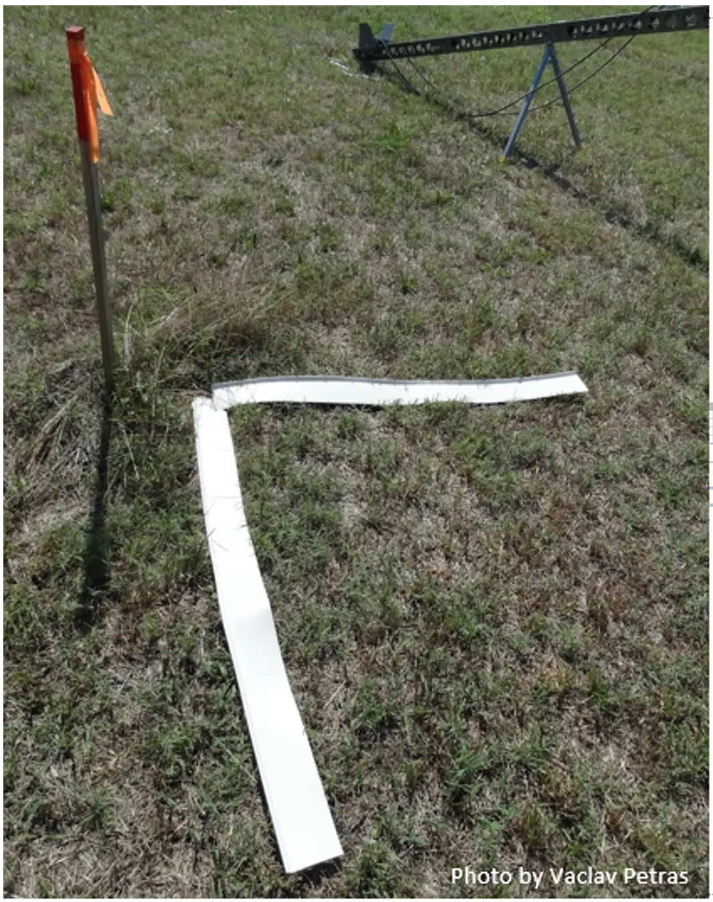
Ground sampling distance
Distance between two consecutive pixel centers measured on the ground:
\[ \text{GSD} = \frac{H \times S_w}{f \times I_w} \]
| Symbol | Meaning |
|---|---|
| \(H\) | Flight altitude above ground level, AGL (m) |
| \(S_w\) | Sensor width (mm) |
| \(f\) | Focal length (mm) |
| \(I_w\) | Image width (pixels) |
Larger GSD means lower spatial resolution; smaller GSD means higher spatial resolution
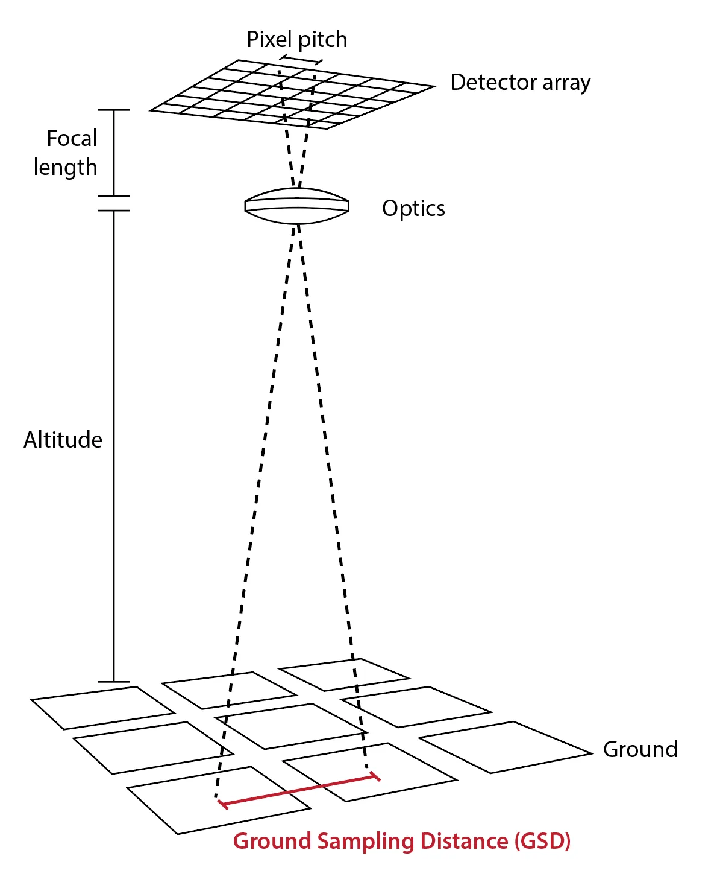
GCP accuracy and GSD
| Requirement | Rule of thumb |
|---|---|
| GCP target size | 5 to 10 times the GSD |
| GCP survey accuracy | Better than the accuracy you need in the products; finer than 0.1 times the GSD is wasted, because the target cannot be marked on the image more precisely than that |
| Accuracy of the final products | Sets the survey accuracy and the GSD, and so the altitude, in the first place |
Work backwards: required product accuracy sets the survey accuracy and the GSD, the GSD sets the altitude and the target size
Site evaluation
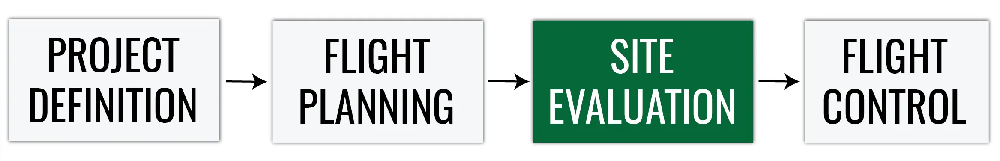
- Terrain check: high obstacles in the takeoff, mission, landing, and alternative landing locations
- Ask the locals about possible air traffic or ground activities
- Weather check: temperature affects battery life, and most UAS cannot operate in rain
- Use checklists, do not rely on your memory
Sample checklists: paper checklist for the Phantom and the RMUS preflight app
Site layout
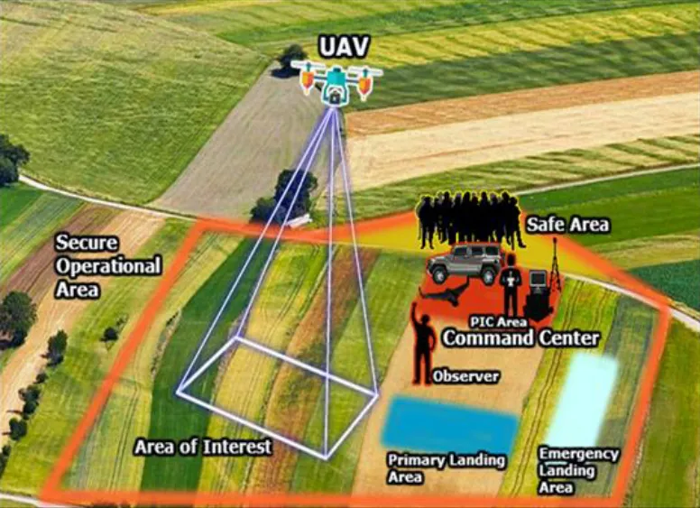
Preflight inspection
- A preflight inspection is required under Part 107.49: weather, airspace, people and property on the surface, crew briefing, control links, power, and payload
- The rule lists what to check, not a checklist; the FAA advisory circular AC 107-2 recommends the Remote Pilot in Command (RPIC) follow the manufacturer’s checklist, or develop one when none exists
- Checklists are usually built into the flight software or available from the vendor
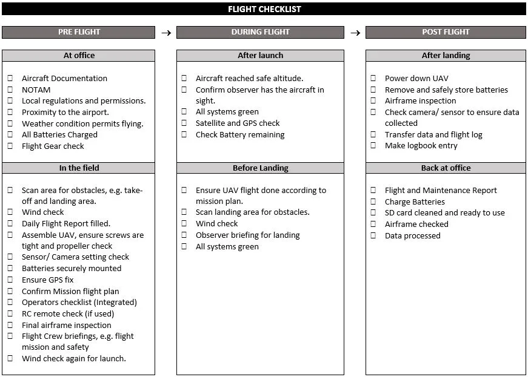
North Carolina: no separate N.C. permit is required for commercial and government operators since December 1, 2024
Flight control
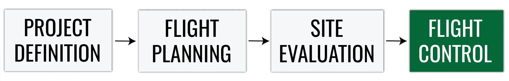
- The RPIC should launch, operate, and recover from preset locations so the aircraft flies according to the mission plan
- Observation locations should be selected for maximum line of sight throughout the planned flight area (Part 107.31)
- On any failure or loss of visual contact, command the aircraft back to the recovery location or use the built-in fail-safe features
Visual Line of Sight (VLOS): the flight crew must have a clear view of the aircraft at all times, without aids other than corrective lenses
Flight crew roles
| Role | Responsibility |
|---|---|
| RPIC, Remote Pilot in Command | Holds the certificate; responsible for the operation and the final say |
| PMC, Person Manipulating the Controls | Flies the aircraft under the direct supervision of the RPIC |
| VO, Visual Observer | Watches the aircraft and the airspace; optional but recommended |
Part 107.33: the RPIC, the person manipulating the controls, and any visual observer must be able to communicate with each other at all times
Lake Wheeler
Lake Wheeler Road Field Laboratory
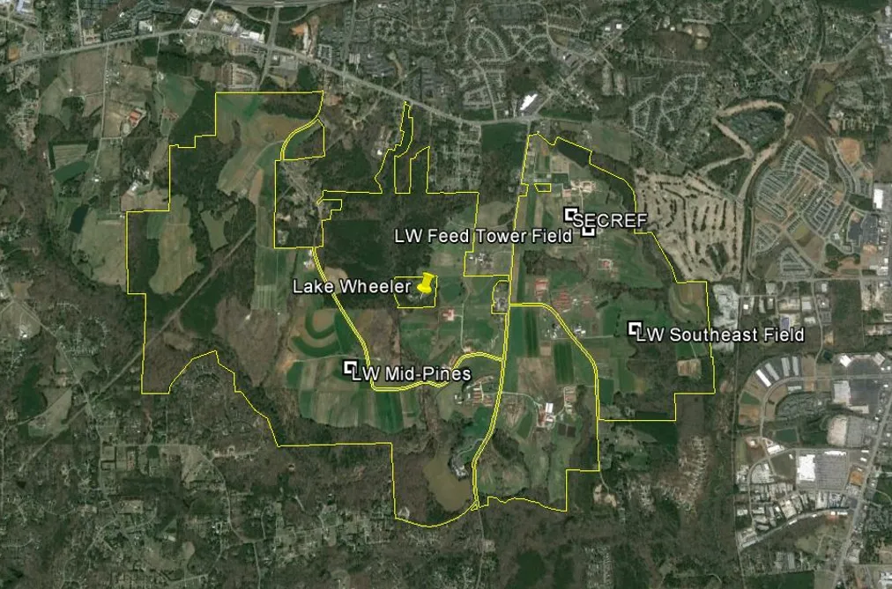
Lake Wheeler on the sectional chart
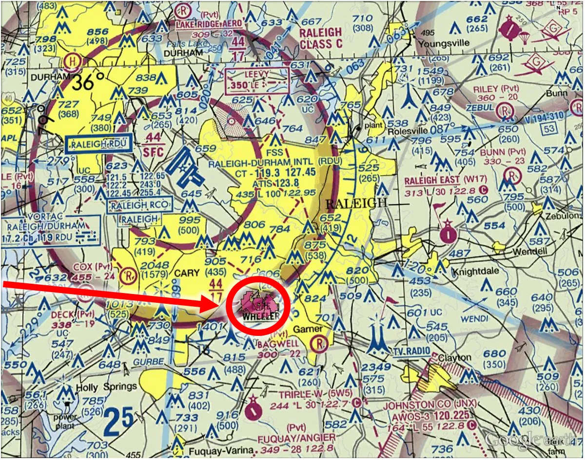
Planning the mapping flight
Flight planning software
- Multiple platforms are available; some are dedicated to a specific UAS and sold with the system
| Commercial | Open source |
|---|---|
| DroneDeploy | QGroundControl |
| Pix4Dcapture Pro | Mission Planner |
| DJI GS PRO | |
| UgCS | |
| DroneLink |
What they share: draw the area, set altitude and overlap, and the app computes the flight lines, photo count, and flight time
Overlap geometry
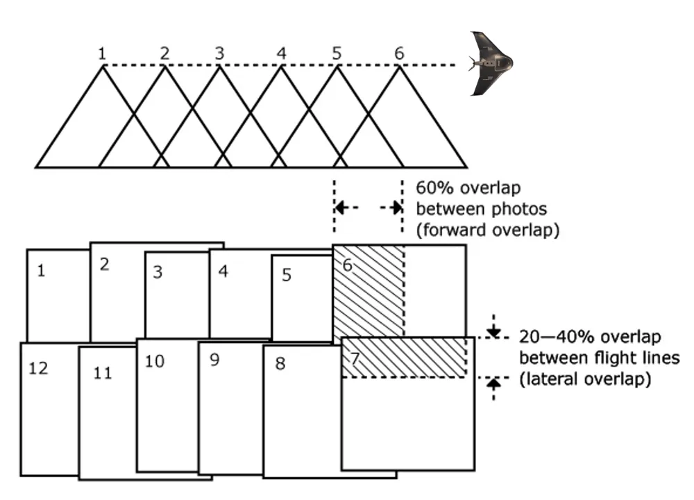
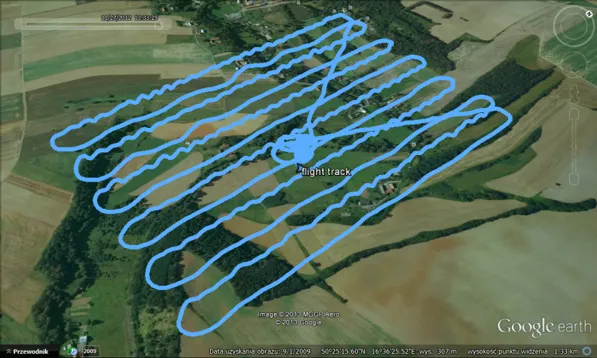
- Forward overlap: between consecutive photos on a flight line
- Side (lateral) overlap: between adjacent flight lines
- The flight track on the right is the lawnmower pattern the plan produces
Location and camera
Location
- Fly a larger extent than you need
- Think about the area you need for analysis, plus a buffer
- Edge accuracy is always worse than the middle
Camera settings
General camera settings are usually fine. Optional:
| Setting | Value |
|---|---|
| Mechanical shutter | On |
| Focus | Infinity |
| Shutter priority | 1/800 s |
| Aspect ratio | 3:2 |
Camera angle
| Nadir (straight down) | Gently oblique | Oblique (pitched) | |
|---|---|---|---|
| Gimbal pitch | -90 degrees | -55 to -75 degrees, 15 to 35 degrees off nadir | About -45 degrees |
| Best for | Most mapping: orthomosaics and DSMs | A supplemental pass over a nadir block; rough or high-relief terrain | Buildings, facades, 3D models |
| Trade-off | Simple, efficient | Stronger self-calibration, less doming; more photos | Full 3D detail; more photos and flight time, weaker orthomosaic |
Combine them: a nadir grid gives the map, an inclined pass fixes the camera model, and a steep oblique pass adds the facades
Altitude
- Altitude above ground level (AGL) sets the GSD and the flight path; typical mapping altitude is 70 m to 120 m AGL
- Higher altitude: fewer lines, shorter flight, coarser GSD
- Use a terrain-aware flight path on sloping sites so AGL stays constant
- Stay under the ceiling of the airspace authorization
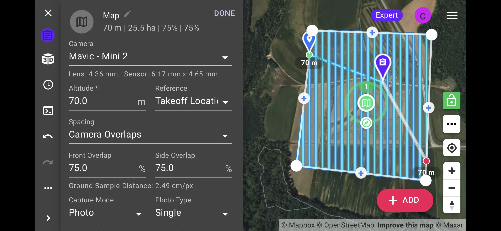
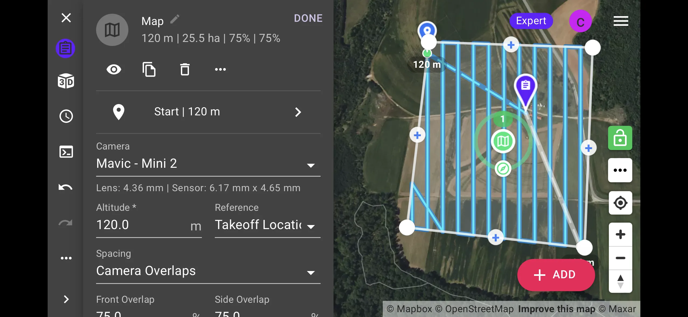
Flight patterns
- One set of parallel lines
- Standard for orthomosaics and DSMs
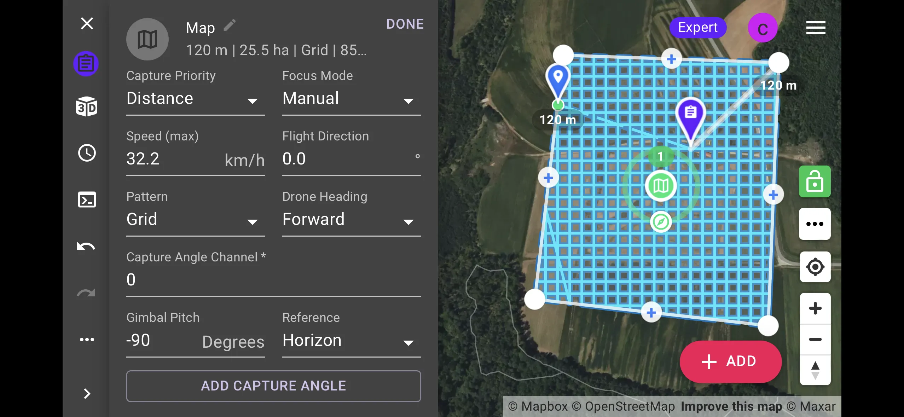
- Two perpendicular sets of lines
- More detail and stronger geometry, longer flight time
Overlap
| Minimum | Recommended for SfM | |
|---|---|---|
| Forward | 60% | 75 to 85% |
| Side | 40% | 60 to 80% |
- Homogeneous terrain (crops, sand, water) needs more overlap: fewer features to match
- More overlap means more photos, longer flights, and longer processing
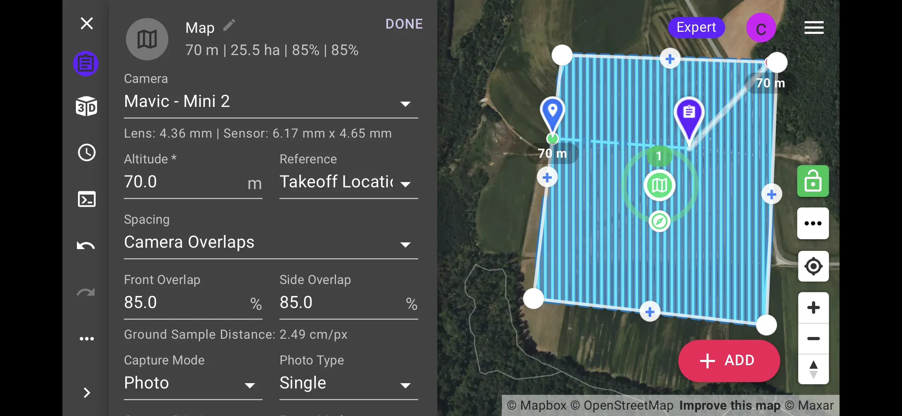
Question: how will overlap impact your flight path?
Drone speed
- Typical mapping speed: about 30 km/h, set by the app from altitude and forward overlap
- The limit is the camera, not the aircraft
| Factor | Effect on speed |
|---|---|
| Lighting | Low light forces a slower shutter and a slower flight |
| Camera shutter | Faster shutter allows faster flight |
| Altitude | Higher altitude allows faster flight for the same blur |
| Motion blur | Blur is speed times exposure time; keep it under one GSD, under half a GSD for precision work |
Lighting
| Conditions | Effect |
|---|---|
| Overcast, bright | Best: even illumination, no hard shadows |
| Noon | Shortest shadows on a clear day |
| Partly cloudy | Exposure changes between photos; avoid if you can |
| Low sun | Long shadows and glare; avoid |
Avoid shadows: shadows move between photos and between flights, and they show up as seams in the orthomosaic and as noise in the DSM
Wrap-up
Assignment 3A: Terrain analysis of the flight site using GIS tools, a flight plan analysis for Lake Wheeler in GRASS
Next: the UAS flight at Lake Wheeler on Wednesday; read the GNSS field protocol before the trip. Lecture 3B covers ground control, checkpoints, and accuracy